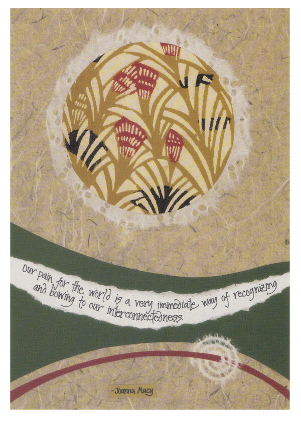
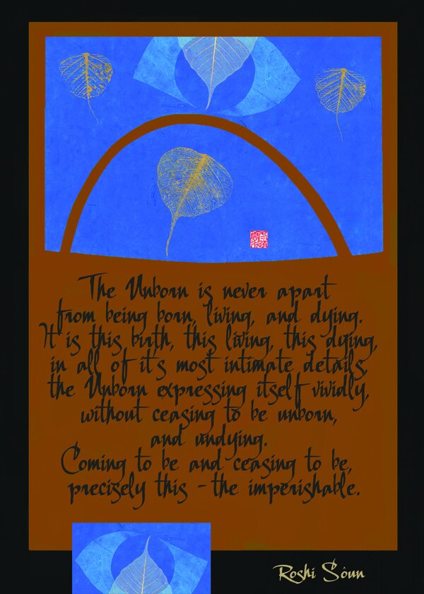

A meeting of collage art and poetry
TASTETHE SKY.
Love Made Visible Through Art & Poetry
Collage artRashani Réa
PoetryChelan Harkin

The published cover · Rashani Réa & Chelan Harkin
An invitation to look, then look again
Not only
read.
Behold.
In Taste the Sky, images and words are not competing for attention. Rashani Réa’s collage art and Chelan Harkin’s poetry meet in a 104-page collection that asks us to spend time with both.
These are two distinct artistic practices brought into one book: the hand-built language of collage alongside poems about love, vulnerability, and the sacred.
Words from the published collection
“More often
than not…”
anything that can truly reach a heart
comes from a heart
In the poem shared by Science and Nonduality, reaching another heart begins with one that has known its own wounds. That movement from hurt toward expression speaks to the book’s wider contemplative mood.
Read the published poem and introductionThe words
become part
of the image.
Rashani’s work with collage and calligraphy began long before Taste the Sky. In her broader body of work, other people’s words often live directly inside her compositions—handwritten, framed, layered, and held in color.
The selections below come from her homage to family, mentors and friends—an archive of images in conversation with voices that have shaped her life.


A practice of gathering image, word, and lived experience.
Before sunrise ✳
A morning
that opens
into a question.
Rashani begins the published introduction to Taste the Sky at her laptop before dawn. A message from theologian Matthew Fox shifts her attention toward creation spirituality, grief, and what it means to live without a prescribed path.
She reflects on creation spirituality and the natural world.
She recounts a profound loss in childhood and its lasting place in her contemplative life.
Her introduction returns to Jiddu Krishnamurti’s understanding of truth as a pathless land.
Two artists.
One meeting place.
Rashani Réa
Artist, writer, and retreat facilitator. She began studying sumi-e brush painting and writing poetry at eight, later developed a lifelong collage practice, and now lives on Hawaiʻi Island.
Chelan Harkin
Poet and co-creator of Taste the Sky. Her writing carries the collection's poetic voice, in conversation with Rashani's layered visual language.
A collection to return to
Taste the Sky
Love Made Visible Through Art & Poetry
Find the book at XlibrisRashani Réa / Collage Art · Chelan Harkin / Poetry